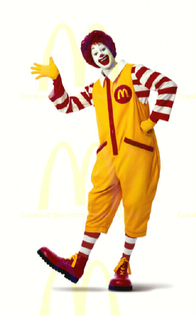

Since 1955, we 've been proud to serve the world some of its favorite food. And along the way, we 've managed not just to live history, but create it: from drive-thru restaurants to Chicken McNuggets to college credits from Hamburger U and much more. It 's been quite the journey, and we promise this is just the beginning-we 've got our hearts set on making more history.
The business began in 1940, with a restaurant opened by brothers Richard and Maurice McDonald at 1398 North E Street at West 14th Street in San Bernardino, California. Their introduction of the "Speedee Service System" in 1948 furthered the principles of the modern fast-food restaurant that the White Castle hamburger chain had already put into practice more than two decades earlier. The original mascot of McDonald's was a man with a chef's hat on top of a hamburger shaped head whose name was "Speedee". Speedee was eventually replaced with Ronald McDonald by 1967 when the company first filed a U.S. trademark on a clown shaped man having puffed out costume legs.